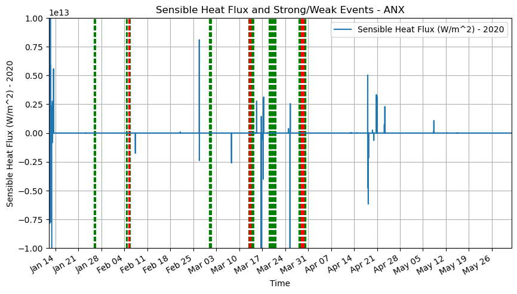
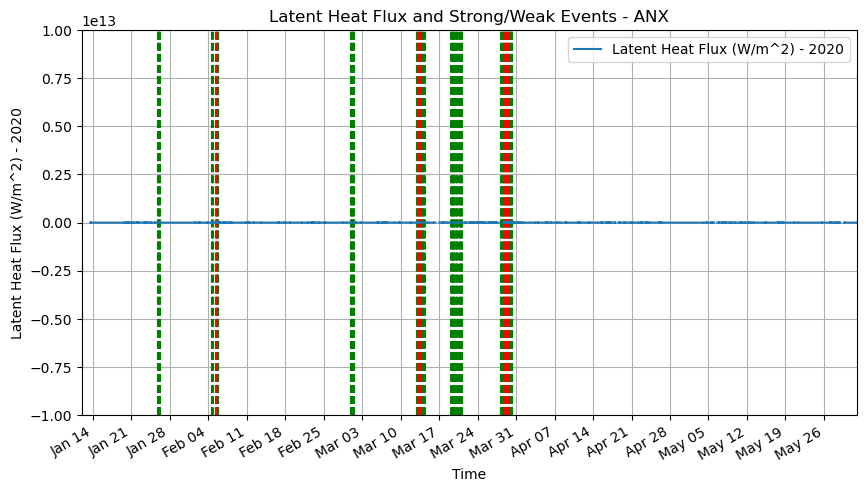
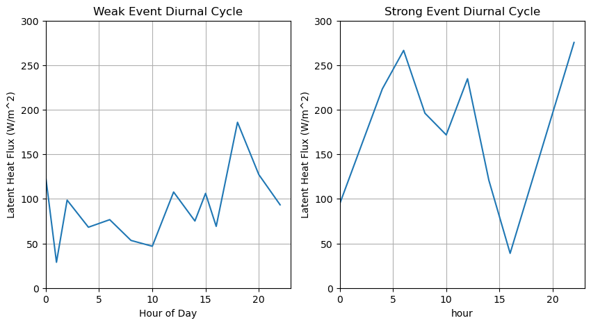

import act
import xarray as xr
import numpy as np
import pandas as pd
import dask
username = 'nalex'
token = '73a87dffb0bbdfcd'
# Set the datastream and start/enddates
datastream = 'anx30ecorM1.b1'
startdate = '2019-12-01'
enddate = '2020-06-15'
# Use ACT to easily download the data. Watch for the data citation! Show some support
# for ARM's instrument experts and cite their data if you use it in a publication
result = act.discovery.download_arm_data(username, token, datastream, startdate, enddate)
import glob
anx_files = glob.glob('anx30ecorM1.b1/*')
nsa_files = glob.glob('nsa30qcecorE10.s1/*')
ds_nsa = xr.open_mfdataset(nsa_files)
ds_anx = xr.open_mfdataset(anx_files)
/Users/nalex2023/miniconda3/envs/nma/lib/python3.12/site-packages/xarray/core/concat.py:546: FutureWarning: unique with argument that is not not a Series, Index, ExtensionArray, or np.ndarray is deprecated and will raise in a future version.
common_dims = tuple(pd.unique([d for v in vars for d in v.dims]))
/Users/nalex2023/miniconda3/envs/nma/lib/python3.12/site-packages/xarray/core/concat.py:546: FutureWarning: unique with argument that is not not a Series, Index, ExtensionArray, or np.ndarray is deprecated and will raise in a future version.
common_dims = tuple(pd.unique([d for v in vars for d in v.dims]))
/Users/nalex2023/miniconda3/envs/nma/lib/python3.12/site-packages/xarray/core/concat.py:546: FutureWarning: unique with argument that is not not a Series, Index, ExtensionArray, or np.ndarray is deprecated and will raise in a future version.
common_dims = tuple(pd.unique([d for v in vars for d in v.dims]))
/Users/nalex2023/miniconda3/envs/nma/lib/python3.12/site-packages/xarray/core/concat.py:546: FutureWarning: unique with argument that is not not a Series, Index, ExtensionArray, or np.ndarray is deprecated and will raise in a future version.
common_dims = tuple(pd.unique([d for v in vars for d in v.dims]))
ANX site ECOR data
COMBLE period
anx_weak_events = ['2020-01-25T20:00:30.000000000''2020-01-25T22:00:30.000000000'
'2020-01-26T00:00:30.000000000''2020-01-26T02:00:30.000000000'
'2020-01-26T04:00:30.000000000' '2020-01-26T06:00:30.000000000'
'2020-02-04T16:00:30.000000000' '2020-02-04T18:00:30.000000000'
'2020-02-04T20:00:30.000000000' '2020-02-05T08:00:30.000000000'
'2020-02-05T14:00:30.000000000' '2020-02-05T16:00:30.000000000'
'2020-02-05T18:00:30.000000000' '2020-02-05T20:00:30.000000000'
'2020-02-29T22:00:30.000000000' '2020-03-01T00:00:30.000000000'
'2020-03-01T02:00:30.000000000' '2020-03-01T04:00:30.000000000'
'2020-03-01T06:00:30.000000000' '2020-03-01T08:00:30.000000000'
'2020-03-01T10:00:30.000000000' '2020-03-01T12:00:30.000000000'
'2020-03-12T22:00:30.000000000' '2020-03-13T00:00:30.000000000'
'2020-03-13T02:00:30.000000000' '2020-03-13T16:00:30.000000000'
'2020-03-13T18:00:30.000000000' '2020-03-13T20:00:30.000000000'
'2020-03-13T22:00:30.000000000' '2020-03-14T00:00:30.000000000'
'2020-03-14T02:00:30.000000000' '2020-03-14T04:00:30.000000000'
'2020-03-14T06:00:30.000000000' '2020-03-14T08:00:30.000000000'
'2020-03-19T04:00:30.000000000' '2020-03-19T06:00:30.000000000'
'2020-03-19T08:00:30.000000000' '2020-03-19T10:00:30.000000000'
'2020-03-19T12:00:30.000000000' '2020-03-19T14:00:30.000000000'
'2020-03-19T16:00:30.000000000' '2020-03-19T18:00:30.000000000'
'2020-03-19T20:00:30.000000000' '2020-03-20T02:00:30.000000000'
'2020-03-20T04:00:30.000000000' '2020-03-20T06:00:30.000000000'
'2020-03-20T08:00:30.000000000' '2020-03-20T16:00:30.000000000'
'2020-03-20T18:00:30.000000000' '2020-03-20T20:00:30.000000000'
'2020-03-20T22:00:30.000000000' '2020-03-21T00:00:30.000000000'
'2020-03-21T02:00:30.000000000' '2020-03-21T04:00:30.000000000'
'2020-03-28T06:00:30.000000000' '2020-03-28T08:00:30.000000000'
'2020-03-28T10:00:30.000000000' '2020-03-28T12:00:30.000000000'
'2020-03-28T14:00:30.000000000' '2020-03-28T16:00:30.000000000'
'2020-03-28T18:00:30.000000000' '2020-03-28T20:00:30.000000000'
'2020-03-29T18:00:30.000000000' '2020-03-29T20:00:30.000000000'
'2020-03-29T22:00:30.000000000' '2020-03-30T00:00:30.000000000'
'2020-03-30T02:00:30.000000000' '2020-03-30T04:00:30.000000000'
'2020-03-30T06:00:30.000000000' '2020-03-30T08:00:30.000000000']
strong_events = ['2020-02-05T10:00:30.000000000' '2020-02-05T12:00:30.000000000'
'2020-03-13T04:00:30.000000000' '2020-03-13T06:00:30.000000000'
'2020-03-13T08:00:30.000000000' '2020-03-13T10:00:30.000000000'
'2020-03-13T12:00:30.000000000' '2020-03-13T14:00:30.000000000'
'2020-03-28T22:00:30.000000000' '2020-03-29T00:00:30.000000000'
'2020-03-29T02:00:30.000000000' '2020-03-29T04:00:30.000000000'
'2020-03-29T06:00:30.000000000' '2020-03-29T08:00:30.000000000'
'2020-03-29T10:00:30.000000000' '2020-03-29T12:00:30.000000000'
'2020-03-29T14:00:30.000000000' '2020-03-29T16:00:30.000000000']
strong_events = [x for x in strong_events[0].split('.000000000')]
strong_events = pd.to_datetime(strong_events)
anx_weak_events = [x for x in anx_weak_events[0].split('.000000000')]
anx_weak_events = pd.to_datetime(anx_weak_events)
import matplotlib.dates as mdates
import matplotlib.pyplot as plt
def plot_weak_strong(ds,weak,strong,label):
fig,ax = plt.subplots(1,1,figsize=(10,5))
for event in weak:
ax.axvline(event,color='g',linestyle='--')
for event in strong:
ax.axvline(event,color='r',linestyle='--')
ds.plot(ax=ax,label=f'{label} Heat Flux (W/m^2) - 2020')
ax.set_title(f'{label} Heat Flux and Strong/Weak Events - ANX')
ax.set_ylabel(f'{label} Heat Flux (W/m^2) - 2020')
ax.set_xlabel('Time')
ax.set_ylim(-1e13,1e13)
ax.xaxis.set_major_locator(mdates.WeekdayLocator())
ax.xaxis.set_major_formatter(mdates.DateFormatter('%b %d'))
ax.set_xlim('2020-01-12','2020-06-01')
ax.grid()
ax.legend()
plot_weak_strong(ds_anx['h'],anx_weak_events,strong_events,
label='Sensible')

plot_weak_strong(ds_anx['lv_e'],anx_weak_events,strong_events,
label='Latent')

weak_data = ds_anx['h'].sel(time=anx_weak_events,
method='nearest').shift(time=4)
strong_data = ds_anx['h'].sel(time=strong_events,
method='nearest').shift(time=4)
diurnal_weak = weak_data.groupby('time.hour').mean(dim='time')
diurnal_strong = strong_data.groupby('time.hour').mean(dim='time')
fig,ax = plt.subplots(1,2,figsize=(10,5))
diurnal_weak.plot(ax=ax[0])
ax[0].set_title('Weak Event Diurnal Cycle')
ax[0].set_ylabel('Latent Heat Flux (W/m^2)')
ax[0].set_xlabel('Hour of Day')
diurnal_strong.plot(ax=ax[1])
ax[1].set_title('Strong Event Diurnal Cycle')
ax[1].set_ylabel('Latent Heat Flux (W/m^2)')
for ii in range(2):
ax[ii].grid()
ax[ii].set_ylim(-0,300)
ax[ii].set_xlim(0,23)

import seaborn as sbs
fig,ax = plt.subplots(1,1,figsize=(10,5))
#weak_data = weak_data.to_dataframe()
#strong_data = strong_data.to_dataframe()
sbs.kdeplot(weak_data,label='Weak Events',ax=ax)
sbs.kdeplot(strong_data,label='Strong Events',ax=ax)
ax.legend()
<matplotlib.legend.Legend at 0x29a23c530>
import plotly.figure_factory as ff
import numpy as np
# Assuming you have another dataset named 'strong_data'
group_labels = ['weak_events', 'strong_events'] # names of the datasets
fig = ff.create_distplot([weak_data.dropna(dim='time').values, strong_data.dropna(dim='time').values], group_labels, bin_size=0.5,
show_hist=False)
# add xlabel
fig.update_layout(
xaxis_title_text='Latent Heat Flux (W/m^2)',
title='Latent Heat Flux Distribution for Strong and Weak Events',
xaxis = dict(
tickmode = 'linear',
tick0 = 0,
dtick = 50
),
yaxis = dict(
title = 'Density'
)
)
fig.show()
username = 'nalex'
token = '73a87dffb0bbdfcd'
# Set the datastream and start/enddates
datastream = 'anxdlprofwstats4newsS2.c1'
startdate = '2019-12-01'
enddate = '2020-06-15'
# Use ACT to easily download the data. Watch for the data citation! Show some support
# for ARM's instrument experts and cite their data if you use it in a publication
result = act.discovery.download_arm_data(username, token, datastream, startdate, enddate)
lidar_files = glob.glob('anxdlprofwstats4newsS2.c1/*')
dset_lidar_anx = xr.open_mfdataset(lidar_files)
dset_lidar_anx
/Users/nalex2023/miniconda3/envs/nma/lib/python3.12/site-packages/xarray/core/concat.py:546: FutureWarning:
unique with argument that is not not a Series, Index, ExtensionArray, or np.ndarray is deprecated and will raise in a future version.
/Users/nalex2023/miniconda3/envs/nma/lib/python3.12/site-packages/xarray/core/concat.py:546: FutureWarning:
unique with argument that is not not a Series, Index, ExtensionArray, or np.ndarray is deprecated and will raise in a future version.
<xarray.Dataset>
Dimensions: (time: 26352, bound: 2, height: 133)
Coordinates:
* time (time) datetime64[ns] 2019-12-01 ... 2020-06-01T23:...
* height (height) float32 15.0 45.0 ... 3.945e+03 3.975e+03
Dimensions without coordinates: bound
Data variables: (12/57)
base_time (time) datetime64[ns] 2019-12-01 ... 2020-06-01
time_offset (time) datetime64[ns] dask.array<chunksize=(144,), meta=np.ndarray>
time_bounds (time, bound) datetime64[ns] dask.array<chunksize=(144, 2), meta=np.ndarray>
snr (time, height) float32 dask.array<chunksize=(144, 133), meta=np.ndarray>
snr_25 (time, height) float32 dask.array<chunksize=(144, 133), meta=np.ndarray>
snr_75 (time, height) float32 dask.array<chunksize=(144, 133), meta=np.ndarray>
... ...
met_lat (time) float64 74.5 74.5 74.5 74.5 ... 74.5 74.5 74.5
met_lon (time) float64 19.0 19.0 19.0 19.0 ... 19.0 19.0 19.0
met_alt (time) float64 18.0 18.0 18.0 18.0 ... 18.0 18.0 18.0
lat (time) float32 74.5 74.5 74.5 74.5 ... 74.5 74.5 74.5
lon (time) float32 19.0 19.0 19.0 19.0 ... 19.0 19.0 19.0
alt (time) float32 18.0 18.0 18.0 18.0 ... 18.0 18.0 18.0
Attributes: (12/15)
process_version: vap-dlprof_wstats-1.4-0.el7
command_line: idl -R -n dlprof_wstats -s anx -f S2 -d 20191201
dod_version: dlprofwstats4news-c1-0.1
Conventions: ARM-1.1
site_id: anx
platform_id: dlprofwstats4news
... ...
facility_id: S2
input_datastreams: anxceilS2.b1 : 1.6 : 20191130.000003-20191202.0000...
serial_number: 0710-09
doi: DOI:10.5439/1178583
doi_url: http://dx.doi.org/10.5439/1178583
history: created by user dsmgr on machine flint at 2022-04-...dset_lidar_anx.w.T.plot(vmin=-10,vmax=10,
cmap='jet')
<matplotlib.collections.QuadMesh at 0x29b38fb30>